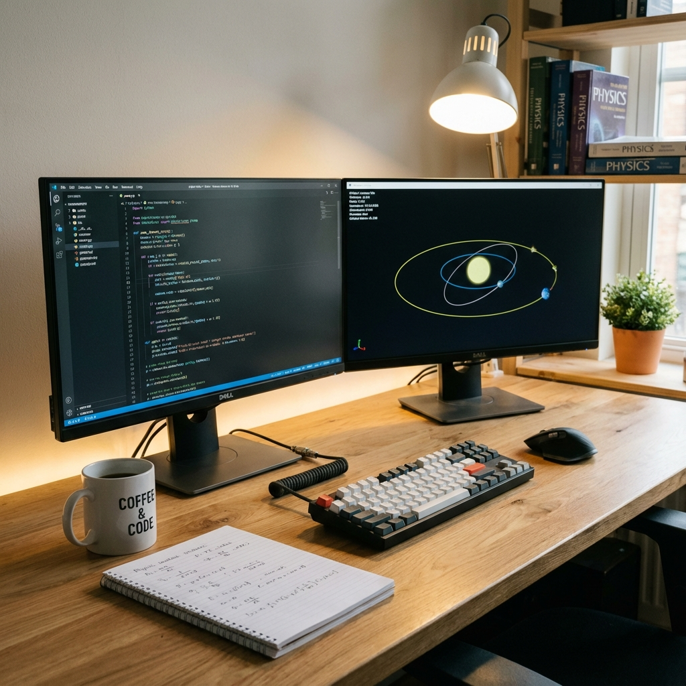
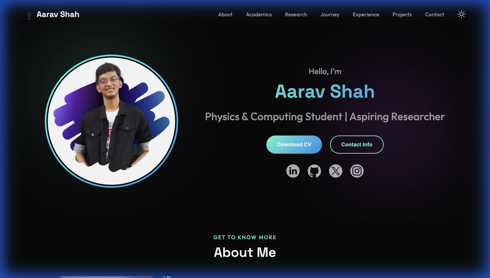

Hello, I'm
Aarav Shah
Physics, Computing & Terminal Tooling


Hello, I'm
Physics, Computing & Terminal Tooling
Get To Know More


Python, Bash & Data Analysis
Research + CLI Tooling

BITS Pilani
M.Sc. Physics &
B.E. Math & Computing
Hi, I am Aarav Shah, a Junior (3rd Year) student at Birla Institute of Technology & Science, Pilani. I am pursuing a Dual Degree in M.Sc. Physics and B.E. Mathematics & Computing (2023-2028).
Based in Mumbai, I work across computational physics, applied data analysis, and terminal-first software. My recent work includes ocean-current modelling at NCPOR, solar-energy data analysis, and public tools such as CPKB, Media Tracker, and Knowledge Grapher.
Academic Focus
Building simulation and modelling workflows with Python, Jupyter, NetCDF, Gnuplot, and terminal-native analysis tools.
Studying ocean sea-level/current variability and renewable-energy datasets through preprocessing, forecasting, and statistical analysis.
Designing CLI/TUI products with SQLite, fuzzy search, spaced repetition, package distribution, and polished web dashboards.
Academic Background
freeCodeCamp
Aug 2025
CodeSignal
Aug 2025
Coddy
Aug 2025
Canvas Credentials
Mar 2025
Great Learning
Jul 2024
SuperAGI
Sep 2023
EDX Alumni
Jul 2023
My Path
Started coding journey with Java & Python.
Explored Automation & Scripting during the pandemic.
Started Dual Degree at BITS Pilani (M.Sc. Physics + B.E. Math).
Deep dived into Web Development and Python Automation projects.
Research Intern at NCPOR under Dr. Arnab Mukherjee.
Conducted the "Study of Long-Term Variability of Ocean Sea Level and Currents in the Bay of Bengal".
Generated and predicted Wind Patterns for 2008-2021 using a linear model trained on satellite data. Analyzed discrepancies between predicted and observed wind data.
Joined Student Faculty Committee (Physics Dept).
Facilitated academic improvement by presenting consolidated student feedback on curriculum.
Conducted undergraduate research on the socio-economic impact of renewable energy in rural India under Prof. Sumanta Pasari.
Used factor and cluster analysis to classify respondent groups and propose data-driven solar-adoption interventions.
Data Analyst at AVAADA Energy Ltd
Worked under Prof. Pabitra Biswas. Analyzed energy generation data to understand factors influencing Global Horizontal Irradiance (GHI).
Built a run of local-first tools: Physics-KB/CPKB, Knowledge Grapher, Media Tracker, Radiant Player, and CFDash.
Published CPKB as an installable package through pip, pipx, and a Homebrew tap.
Explore My
AVAADA Energy Ltd ↗
Oct 2025 - Nov 2025 • Remote
Worked under Prof. Pabitra Biswas on AVAADA Energy data. Preprocessed raw sensor data, built releases across 1m, 5m, 15m, 30m, and 1h timeframes, and tested hypotheses around environmental factors influencing Global Horizontal Irradiance.
BITS Pilani ↗
Jul 2025 - Dec 2025 • Pilani
Researched the socio-economic impact of renewable energy on rural India under Prof. Sumanta Pasari. Used multivariate statistics, factor analysis, and cluster analysis to classify respondent groups and suggest policy interventions.
Student Faculty Committee - Physics Dept ↗
Jul 2025 - Present • BITS Pilani
Student Faculty Member for the Physics Department. Serve as a liaison between students and faculty, present curriculum and teaching feedback, and help coordinate departmental academic initiatives.
National Centre for Polar and Ocean Research (NCPOR) ↗
May 2025 - Jul 2025 • Remote
Studied long-term variability of ocean sea level and currents in the Bay of Bengal under Dr. Arnab Mukherjee. Built NetCDF/Python workflows to predict 2008-2021 wind patterns from 2000-2007 satellite data and documented the final report for the NCPOR Library.

Advanced
Intermediate
Basics
Learning
Intermediate
Intermediate
Basics
Intermediate
Intermediate
Basics
Intermediate
Advanced
Advanced
Intermediate
Intermediate
Basics
Intermediate
Intermediate
Basics
Basics
Browse My Recent
Competitive Programming Knowledge Base: a terminal-first snippet system with full-text search, usage tracking, fzf integration, clipboard insertion, optional encrypted exports, and SM-2 spaced repetition. Published for pip, pipx, and Homebrew.
pipx install cpkb
brew tap Aaravshah2907/cpkb
A computational physics engine that turns Markdown notes into a structured, linked, simulation-ready knowledge base for rigorous study and citation-aware exploration.
Local exam-prep tool that parses Obsidian-style notes into a concept graph, runs PageRank-weighted spaced repetition, and surfaces weak prerequisite links without cloud accounts.
Offline-capable tracker for movies, TV, anime, manga, and books. Combines Unix-style CLI scripts with a glassmorphism dashboard, provider metadata, sidecar JSON files, and local playback sync.
Terminal Codeforces analytics dashboard that reads local submissions and rating history, finds weak tags, recommends unsolved problems, and adds Markdown notes with fuzzy search and spaced review.
TUI-based hybrid music player that mixes local audio and Spotify tracks in a unified queue, with terminal dashboards, playlist persistence, and direct Spotify playback.
Automates BITS Pilani WiFi login by handling dynamic redirects, POSTing credentials, retrying until connected, and packaging macOS Automator plus Linux systemd workflows.
Custom web scraping tool to extract repository data and READMEs, then export context-rich Markdown for research, documentation, and LLM analysis workflows.

Template that auto-converts Jupyter notebooks and deploys them to GitHub Pages with dependency handling and repeatable publishing workflows.
Research output repository connected to the Bay of Bengal sea-level and current variability internship, including Python-based analysis artifacts and generated outputs.
Get in Touch